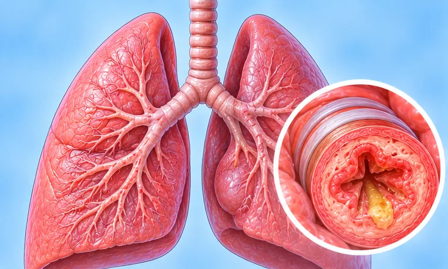

Cough-variant asthma
A type of asthma where a dry cough is the main sign
What it is
The airways are over-sensitive, so a dry cough keeps coming, often at night or after exercise or cold air, even when there is little or no wheezing.
- Airways in the lungs
- Children and adults
- Dry cough for weeks
- Which doctor
- Chest doctor (respirologist), family doctor
- Common in
- Children and adults, often with allergies or hay fever
- Contagious
- No
- Course
- Often comes and goes for months; a doctor can guide long-term care
Common signs

Dry, tickly coughDry cough 
Wakes up short of breathNocturnal dyspnoea 
Tight, heavy chestChest tightness 
Sneezing, runny noseAllergic rhinitis
Why it happens

Dust, pollen or petsAllergens 
Germs (infection)Infectious cause 
SmokingTobacco use
Other causes
- Airways that are over-sensitive and easily swollen
- It often runs in families
See a doctor first if
- Severe trouble breathing, cannot speak in full sentences or blue lips: call 999
- Wheezing or chest tightness that keeps getting worse
- Cough with fever, chest pain or coughing up blood
- A cough that lasts more than three weeks
- A child with a bad cough who is breathing fast: see a doctor promptly
If any apply, please see a doctor before a session.
This page is general information. Please keep taking your normal medicine and keep seeing your doctor.
Keep taking your normal medicine and keep seeing your doctor. Our session is a gentle support and does not replace medical care.
Looking after yourself
- See a doctor to find out the cause of the cough
- Use any inhaler or medicine only as your doctor says
- Avoid smoke, haze and things that bring on your cough
- Keep bedding clean and dust low
Tell your therapist
- A severe allergy
- A heart condition
- High blood pressure
- Pregnancy
Your therapist will go through this with you before starting.
Questions and answers
What is Cough-variant asthma?
A type of asthma where a dry cough is the main sign. The airways are over-sensitive, so a dry cough keeps coming, often at night or after exercise or cold air, even when there is little or no wheezing.
What are the common signs of Cough-variant asthma?
Dry, tickly cough · Wakes up short of breath · Tight, heavy chest · Sneezing, runny nose
Why does Cough-variant asthma happen?
Dust, pollen or pets · Germs (infection) · Smoking
How can I look after myself with Cough-variant asthma?
See a doctor to find out the cause of the cough · Use any inhaler or medicine only as your doctor says · Avoid smoke, haze and things that bring on your cough · Keep bedding clean and dust low
Can an AI Body Master session help with Cough-variant asthma?
A session is gentle, needle-free meridian support for your wellbeing. It does not treat or cure Cough-variant asthma and never replaces your medicine or your doctor. Tell your therapist about it before the session starts.
Related conditions
- Viral pneumonia
- Pneumoconiosis (lung disease from dust)
- Lobar pneumonia (lung infection)
- Malignant pleural effusion (fluid around lung)
- Radiation pneumonitis (after radiotherapy)
- Pneumocystis pneumonia (PCP)
- Benign lung tumour
- Partly collapsed lung (atelectasis)
- Whooping cough (pertussis)
- Variant angina (Prinzmetal's angina)
- Viral myocarditis (heart muscle inflammation)
- Sick sinus syndrome
References: General information based on public health sources such as Mayo Clinic, NHS, Cleveland Clinic and NCBI StatPearls.
Page updated: 2026-11-01